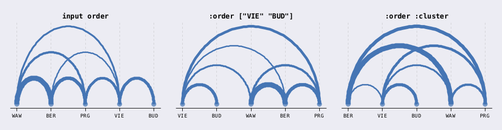
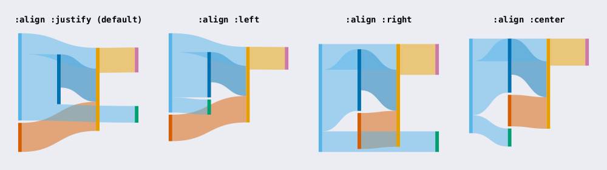
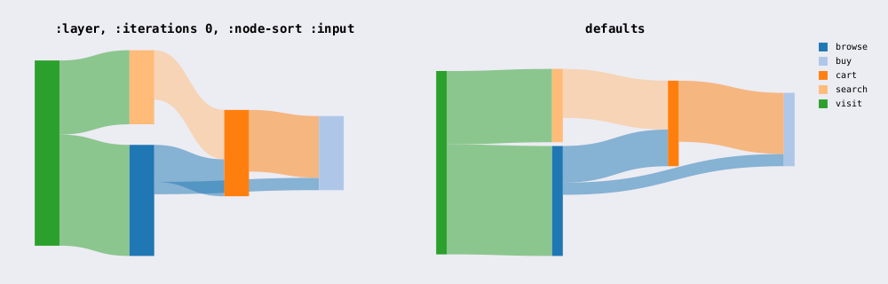
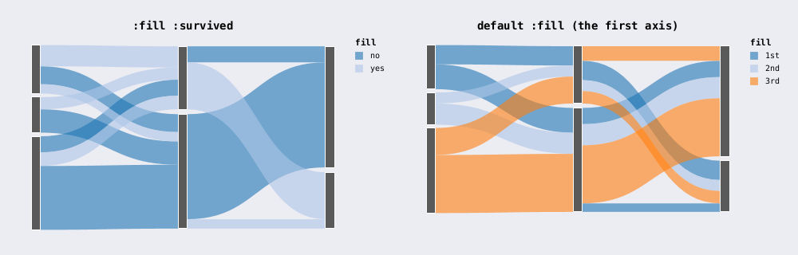
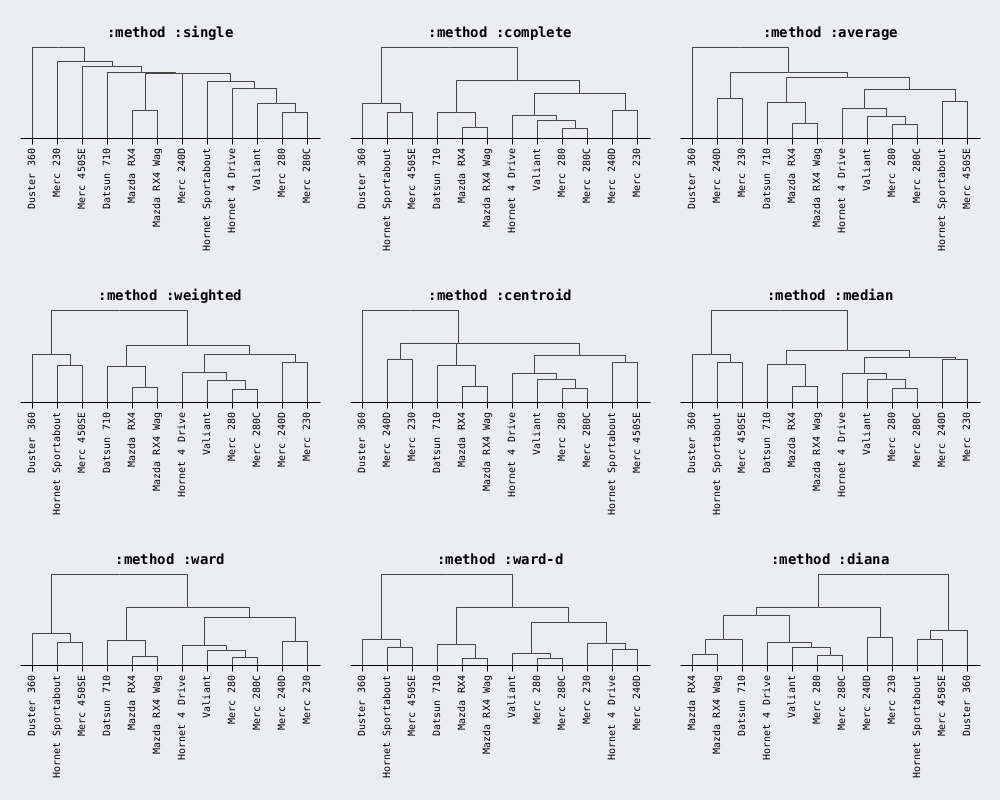
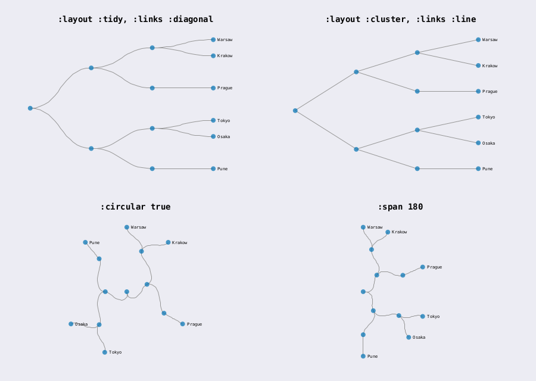

26 Data functions: graphs and trees
Functions turning edges, adjacency matrices, parent links, level columns or clusterings into graphs and trees, and laying them out as rows - node positions, edge paths, ring sectors, bands - that ordinary charts draw (the graph and tree builders are made of them). Options are checked against the table shown.
(ns reference.data-graphs-trees
(:require [fastmath.ml.clustering :as cl]
[fastmath.random :as r]
[fastmath.stats :as stats]
[cljplot2.chart :as chart]
[cljplot2.core :as plot]
[cljplot2.data.graph :as graph]
[cljplot2.data.hierarchy :as hierarchy]
[cljplot2.data.tree :as tree]
[cljplot2.describe :as describe]
[notebook-utils :as nu]))Flights between airports (counts), the airports as node rows, and the same flows as a matrix:
(def flights [{:src "WAW" :dst "BER" :n 12} {:src "WAW" :dst "PRG" :n 5} {:src "BER" :dst "PRG" :n 8}
{:src "PRG" :dst "VIE" :n 6} {:src "VIE" :dst "WAW" :n 4} {:src "BER" :dst "VIE" :n 3}
{:src "WAW" :dst "VIE" :n 2} {:src "BUD" :dst "VIE" :n 7}])| src | dst | n |
|---|---|---|
| WAW | BER | 12 |
| WAW | PRG | 5 |
| BER | PRG | 8 |
| PRG | VIE | 6 |
| VIE | WAW | 4 |
| BER | VIE | 3 |
| WAW | VIE | 2 |
| BUD | VIE | 7 |
(def airports [{:code "WAW" :city "Warsaw"} {:code "BER" :city "Berlin"} {:code "PRG" :city "Prague"}
{:code "VIE" :city "Vienna"} {:code "BUD" :city "Budapest"} {:code "KRK" :city "Krakow"}])| code | city |
|---|---|
| WAW | Warsaw |
| BER | Berlin |
| PRG | Prague |
| VIE | Vienna |
| BUD | Budapest |
| KRK | Krakow |
26.1 graph/graph
The graph of edge rows: nodes (the given node rows first, then ids seen only in edges) with their degrees, and edges with numeric weights. Undirected by default; directed graphs split degrees into in and out.
| Option | Type | Default | Description |
|---|---|---|---|
| :from | a keyword, a function or a categorical marker of one | :from | accessor of an edge row's source node id |
| :to | a keyword, a function or a categorical marker of one | :to | accessor of an edge row's target node id |
| :value | a keyword, a function or a categorical marker of one | :value | accessor of an edge row's weight, a finite number >= 0 (nil - 1) |
| :nodes | sequential of map or nil | node rows (each with an id), placed first in their order; ids seen only in edges follow | |
| :id | a keyword, a function or a categorical marker of one | :id | accessor of a node row's id |
| :directed | true or false or nil | false | a directed graph: degrees split into :in and :out |
The flights as a directed graph with the airports as nodes - Krakow has no flights (degree 0):
| code | city | id | degree | in | out |
|---|---|---|---|---|---|
| WAW | Warsaw | WAW | 4 | 1 | 3 |
| BER | Berlin | BER | 3 | 1 | 2 |
| PRG | Prague | PRG | 3 | 2 | 1 |
| VIE | Vienna | VIE | 5 | 4 | 1 |
| BUD | Budapest | BUD | 1 | 0 | 1 |
| KRK | Krakow | KRK | 0 | 0 | 0 |
The edges of the flights as an undirected graph, the weights from :n as numbers (:value):
| src | dst | n | from | to | value |
|---|---|---|---|---|---|
| WAW | BER | 12 | WAW | BER | 12.0 |
| WAW | PRG | 5 | WAW | PRG | 5.0 |
| BER | PRG | 8 | BER | PRG | 8.0 |
| PRG | VIE | 6 | PRG | VIE | 6.0 |
| VIE | WAW | 4 | VIE | WAW | 4.0 |
| BER | VIE | 3 | BER | VIE | 3.0 |
| WAW | VIE | 2 | WAW | VIE | 2.0 |
| BUD | VIE | 7 | BUD | VIE | 7.0 |
Without a :value accessor every edge weighs 1:
| src | dst | n | from | to | value |
|---|---|---|---|---|---|
| WAW | BER | 12 | WAW | BER | 1.0 |
| WAW | PRG | 5 | WAW | PRG | 1.0 |
| BER | PRG | 8 | BER | PRG | 1.0 |
| PRG | VIE | 6 | PRG | VIE | 1.0 |
| VIE | WAW | 4 | VIE | WAW | 1.0 |
| BER | VIE | 3 | BER | VIE | 1.0 |
| WAW | VIE | 2 | WAW | VIE | 1.0 |
| BUD | VIE | 7 | BUD | VIE | 1.0 |
26.2 graph/layout
Node positions in the unit square: a force-directed layout (each connected component on its own, packed), a circle or random places. Edges get the positions of both ends - segments to draw.
| Option | Type | Default | Description |
|---|---|---|---|
| :layout | one of :circle :force :random | :force | node placement: :force (Fruchterman-Reingold), :circle or :random |
| :iterations | integer (at least 0) | 500 | steps of the force layout |
| :gravity | a non-negative finite number | 1.0 | pull of the force layout to each component's centroid, in units of the ideal edge length (0 - none) |
| :rng | a fastmath random generator or nil | a fresh unseeded generator every call | fastmath random generator of the force and random layouts, copied per call (seeded - the same layout every time) |
The laid-out nodes (:x, :y added):
| id | degree | in | out | x | y |
|---|---|---|---|---|---|
| WAW | 4 | 4 | 4 | 0.3234363307746476 | 0.7801850395367322 |
| BER | 3 | 3 | 3 | 0.06158553022006996 | 0.4588596042823668 |
| PRG | 3 | 3 | 3 | 0.0 | 0.7826090954673459 |
| VIE | 5 | 5 | 5 | 0.544727205118378 | 0.46653057775449486 |
| BUD | 1 | 1 | 1 | 1.0 | 0.21739090453265397 |
The edges as segments, the nodes as points: the force layout (seeded, the same every build), a weaker pull to the centre after few iterations, a circle and random places:
(plot/render-image (plot/arrange (for [[title laid]
[[":layout :force (default)"
(graph/layout (graph/graph flights {:from :src :to :dst :value :n})
{:rng (r/rng :mersenne 3)})]
[":iterations 20 :gravity 0.2"
(graph/layout (graph/graph flights {:from :src :to :dst :value :n})
{:layout :force :iterations 20 :gravity 0.2 :rng (r/rng :mersenne 3)})]
[":layout :circle"
(graph/layout (graph/graph flights {:from :src :to :dst :value :n}) {:layout :circle})]
[":layout :random"
(graph/layout (graph/graph flights {:from :src :to :dst :value :n})
{:layout :random :rng (r/rng :mersenne 3)})]]]
{:charts [(chart/segment {:data (:edges laid) :mapping {:x :x :y :y :xend :xend :yend :yend}})
(chart/scatter {:data (:nodes laid) :mapping {:x :x :y :y} :size 14})
(chart/text {:data (:nodes laid) :mapping {:x :x :y :y :label :id} :size 8})]
:aspect :iso
:scales {:x {:axis false} :y {:axis false}}
:labels {:title title}})
{:columns 2})
{:width 900 :height 640})
26.3 graph/adjacency->edges
Edge rows of a square matrix of weights between named nodes; a zero or missing cell is no edge. Undirected, only the upper triangle (and the diagonal) is read.
| Option | Type | Default | Description |
|---|---|---|---|
| :whole-matrix | true or false | true | read the whole matrix (false - only the upper triangle and the diagonal) |
A symmetric matrix of shared projects between four teams: read whole (each pair twice, directed) and as an undirected graph (each pair once):
(def shared-projects [[0 3 1 0] [3 0 2 4] [1 2 0 0] [0 4 0 0]])| from | to | value |
|---|---|---|
| design | backend | 3 |
| design | data | 1 |
| backend | design | 3 |
| backend | data | 2 |
| backend | ops | 4 |
| data | design | 1 |
| data | backend | 2 |
| ops | backend | 4 |
| from | to | value |
|---|---|---|
| design | backend | 3 |
| design | data | 1 |
| backend | data | 2 |
| backend | ops | 4 |
26.4 graph/arc-layout
An arc diagram as rows: nodes on a line at 0, 1, … in node order, each edge a semicircle between its ends (rows sampled along it).
| Option | Type | Default | Description |
|---|---|---|---|
| :order | :cluster or sequential of any value or nil | the nodes' input order | node order: a sequence of ids (those first, the rest after them in input order) or :cluster (nodes linked to the same others side by side) |
The arcs (rows of each edge’s semicircle, :edge its index):
| edge | from | to | value | x | y |
|---|---|---|---|---|---|
| 0 | WAW | BER | 12.0 | 0.0 | 3.061616997868383E-17 |
| 0 | WAW | BER | 12.0 | 3.0458649045211894E-4 | 0.01744974835125054 |
| 0 | WAW | BER | 12.0 | 0.0012179748700879012 | 0.03487823687206273 |
| 0 | WAW | BER | 12.0 | 0.002739052315863355 | 0.05226423163382673 |
| 0 | WAW | BER | 12.0 | 0.004865965629214819 | 0.06958655048003273 |
| 0 | WAW | BER | 12.0 | 0.00759612349389599 | 0.08682408883346521 |
| 0 | WAW | BER | 12.0 | 0.010926199633097211 | 0.10395584540887973 |
| 0 | WAW | BER | 12.0 | 0.014852136862001764 | 0.12096094779983384 |
| 0 | WAW | BER | 12.0 | 0.019369152030840553 | 0.13781867790849958 |
| 0 | WAW | BER | 12.0 | 0.024471741852423234 | 0.15450849718747373 |
| 0 | WAW | BER | 12.0 | 0.03015368960704584 | 0.1710100716628344 |
| 0 | WAW | BER | 12.0 | 0.03640807271660634 | 0.1873032967079561 |
| 0 | WAW | BER | 12.0 | 0.04322727117869957 | 0.2033683215379001 |
| 0 | WAW | BER | 12.0 | 0.05060297685041648 | 0.21918557339453873 |
| 0 | WAW | BER | 12.0 | 0.05852620357053656 | 0.23473578139294543 |
| 0 | WAW | BER | 12.0 | 0.06698729810778065 | 0.24999999999999994 |
| 0 | WAW | BER | 12.0 | 0.07597595192178702 | 0.26495963211660245 |
| 0 | WAW | BER | 12.0 | 0.08548121372247913 | 0.2795964517353734 |
| 0 | WAW | BER | 12.0 | 0.09549150281252627 | 0.29389262614623657 |
| 0 | WAW | BER | 12.0 | 0.10599462319663905 | 0.30783073766282915 |
| 0 | WAW | BER | 12.0 | 0.116977778440511 | 0.3213938048432697 |
| 0 | WAW | BER | 12.0 | 0.12842758726130293 | 0.3345653031794291 |
| 0 | WAW | BER | 12.0 | 0.14033009983067446 | 0.3473291852294986 |
| 0 | WAW | BER | 12.0 | 0.15267081477050132 | 0.35966990016932554 |
| 0 | WAW | BER | 12.0 | 0.16543469682057088 | 0.3715724127386971 |
| 0 | WAW | BER | 12.0 | 0.17860619515673037 | 0.383022221559489 |
| 0 | WAW | BER | 12.0 | 0.19216926233717085 | 0.39400537680336095 |
| 0 | WAW | BER | 12.0 | 0.20610737385376343 | 0.4045084971874737 |
| 0 | WAW | BER | 12.0 | 0.2204035482646266 | 0.41451878627752087 |
| 0 | WAW | BER | 12.0 | 0.23504036788339755 | 0.42402404807821303 |
| 0 | WAW | BER | 12.0 | 0.25 | 0.4330127018922193 |
| 0 | WAW | BER | 12.0 | 0.2652642186070546 | 0.4414737964294635 |
| 0 | WAW | BER | 12.0 | 0.2808144266054613 | 0.4493970231495835 |
| 0 | WAW | BER | 12.0 | 0.2966316784620998 | 0.45677272882130043 |
| 0 | WAW | BER | 12.0 | 0.3126967032920439 | 0.4635919272833937 |
| 0 | WAW | BER | 12.0 | 0.3289899283371656 | 0.46984631039295416 |
| 0 | WAW | BER | 12.0 | 0.3454915028125263 | 0.47552825814757677 |
| 0 | WAW | BER | 12.0 | 0.36218132209150045 | 0.48063084796915945 |
| 0 | WAW | BER | 12.0 | 0.3790390522001662 | 0.48514786313799824 |
| 0 | WAW | BER | 12.0 | 0.3960441545911204 | 0.48907380036690284 |
| 0 | WAW | BER | 12.0 | 0.41317591116653485 | 0.492403876506104 |
| 0 | WAW | BER | 12.0 | 0.4304134495199673 | 0.4951340343707852 |
| 0 | WAW | BER | 12.0 | 0.4477357683661733 | 0.49726094768413664 |
| 0 | WAW | BER | 12.0 | 0.4651217631279374 | 0.49878202512991215 |
| 0 | WAW | BER | 12.0 | 0.4825502516487495 | 0.4996954135095479 |
| 0 | WAW | BER | 12.0 | 0.5 | 0.5 |
| 0 | WAW | BER | 12.0 | 0.5174497483512503 | 0.4996954135095479 |
| 0 | WAW | BER | 12.0 | 0.5348782368720627 | 0.4987820251299121 |
| 0 | WAW | BER | 12.0 | 0.5522642316338267 | 0.49726094768413664 |
| 0 | WAW | BER | 12.0 | 0.5695865504800326 | 0.4951340343707852 |
| 0 | WAW | BER | 12.0 | 0.5868240888334652 | 0.492403876506104 |
| 0 | WAW | BER | 12.0 | 0.6039558454088796 | 0.48907380036690284 |
| 0 | WAW | BER | 12.0 | 0.6209609477998338 | 0.48514786313799824 |
| 0 | WAW | BER | 12.0 | 0.6378186779084996 | 0.48063084796915945 |
| 0 | WAW | BER | 12.0 | 0.6545084971874737 | 0.47552825814757677 |
| 0 | WAW | BER | 12.0 | 0.6710100716628344 | 0.46984631039295416 |
| 0 | WAW | BER | 12.0 | 0.6873032967079561 | 0.4635919272833937 |
| 0 | WAW | BER | 12.0 | 0.7033683215379001 | 0.4567727288213005 |
| 0 | WAW | BER | 12.0 | 0.7191855733945388 | 0.44939702314958346 |
| 0 | WAW | BER | 12.0 | 0.7347357813929453 | 0.4414737964294635 |
| 0 | WAW | BER | 12.0 | 0.7499999999999999 | 0.43301270189221935 |
| 0 | WAW | BER | 12.0 | 0.7649596321166025 | 0.42402404807821303 |
| 0 | WAW | BER | 12.0 | 0.7795964517353734 | 0.41451878627752087 |
| 0 | WAW | BER | 12.0 | 0.7938926261462366 | 0.4045084971874737 |
| 0 | WAW | BER | 12.0 | 0.8078307376628291 | 0.39400537680336095 |
| 0 | WAW | BER | 12.0 | 0.8213938048432696 | 0.383022221559489 |
| 0 | WAW | BER | 12.0 | 0.834565303179429 | 0.37157241273869723 |
| 0 | WAW | BER | 12.0 | 0.8473291852294986 | 0.3596699001693255 |
| 0 | WAW | BER | 12.0 | 0.8596699001693255 | 0.34732918522949874 |
| 0 | WAW | BER | 12.0 | 0.8715724127386972 | 0.334565303179429 |
| 0 | WAW | BER | 12.0 | 0.883022221559489 | 0.32139380484326974 |
| 0 | WAW | BER | 12.0 | 0.8940053768033609 | 0.30783073766282915 |
| 0 | WAW | BER | 12.0 | 0.9045084971874737 | 0.29389262614623657 |
| 0 | WAW | BER | 12.0 | 0.9145187862775208 | 0.2795964517353734 |
| 0 | WAW | BER | 12.0 | 0.9240240480782129 | 0.26495963211660245 |
| 0 | WAW | BER | 12.0 | 0.9330127018922194 | 0.24999999999999994 |
| 0 | WAW | BER | 12.0 | 0.9414737964294635 | 0.23473578139294532 |
| 0 | WAW | BER | 12.0 | 0.9493970231495834 | 0.2191855733945388 |
| 0 | WAW | BER | 12.0 | 0.9567727288213005 | 0.2033683215379 |
| 0 | WAW | BER | 12.0 | 0.9635919272833937 | 0.1873032967079561 |
| 0 | WAW | BER | 12.0 | 0.9698463103929542 | 0.1710100716628344 |
| 0 | WAW | BER | 12.0 | 0.9755282581475768 | 0.15450849718747373 |
| 0 | WAW | BER | 12.0 | 0.9806308479691594 | 0.13781867790849958 |
| 0 | WAW | BER | 12.0 | 0.9851478631379982 | 0.12096094779983384 |
| 0 | WAW | BER | 12.0 | 0.9890738003669028 | 0.10395584540887962 |
| 0 | WAW | BER | 12.0 | 0.9924038765061041 | 0.08682408883346532 |
| 0 | WAW | BER | 12.0 | 0.9951340343707852 | 0.06958655048003262 |
| 0 | WAW | BER | 12.0 | 0.9972609476841366 | 0.05226423163382684 |
| 0 | WAW | BER | 12.0 | 0.9987820251299121 | 0.03487823687206273 |
| 0 | WAW | BER | 12.0 | 0.9996954135095479 | 0.01744974835125054 |
| 0 | WAW | BER | 12.0 | 1.0 | 3.061616997868383E-17 |
| 1 | WAW | PRG | 5.0 | 0.0 | 6.123233995736766E-17 |
| 1 | WAW | PRG | 5.0 | 6.091729809042379E-4 | 0.03489949670250108 |
| 1 | WAW | PRG | 5.0 | 0.0024359497401758023 | 0.06975647374412546 |
| 1 | WAW | PRG | 5.0 | 0.00547810463172671 | 0.10452846326765346 |
| 1 | WAW | PRG | 5.0 | 0.009731931258429638 | 0.13917310096006547 |
| 1 | WAW | PRG | 5.0 | 0.01519224698779198 | 0.17364817766693041 |
| 1 | WAW | PRG | 5.0 | 0.021852399266194422 | 0.20791169081775945 |
| 1 | WAW | PRG | 5.0 | 0.029704273724003527 | 0.24192189559966767 |
| 1 | WAW | PRG | 5.0 | 0.038738304061681106 | 0.27563735581699916 |
| … | … | … | … | … | … |
Drawn as lines through the arc rows over the nodes: the input order, an order given by ids (those first) and the clustered order (nodes linked to the same others side by side):
(plot/render-image (plot/arrange (for [[title laid]
[["input order" (graph/arc-layout (graph/graph flights {:from :src :to :dst :value :n}))]
[":order [\"VIE\" \"BUD\"]"
(graph/arc-layout (graph/graph flights {:from :src :to :dst :value :n}) {:order ["VIE" "BUD"]})]
[":order :cluster"
(graph/arc-layout (graph/graph flights {:from :src :to :dst :value :n}) {:order :cluster})]]]
{:charts [(chart/line {:data (:arcs laid) :mapping {:x :x :y :y :group :edge :size :value}
:order :data})
(chart/scatter {:data (:nodes laid) :mapping {:x :x :y :y} :size 10})]
:scales {:x {:ticks (vec (range 5))
:formatter (let [ids (mapv :id (:nodes laid))] #(get ids (long %) ""))}
:y {:axis false}}
:labels {:title title}
:legend false})
{:columns 3})
{:width 1000 :height 260})
26.5 graph/chord-layout
A chord diagram as polygon rows in the unit circle: a ring sector per node (its angle by the node’s flow) and a ribbon per linked pair (undirected) or edge (directed) through the centre.
| Option | Type | Default | Description |
|---|---|---|---|
| :order | :cluster or sequential of any value or nil | the nodes' input order | node order: a sequence of ids (those first, the rest after them in input order) or :cluster (nodes linked to the same others side by side) |
| :gap-angle | a non-negative finite number | 2.0 | gap after every ring sector in degrees (must leave room for the sectors) |
| :inner-radius | a number in (0 1) | 0.92 | inner radius of the ring, where the ribbons end (the outer one is 1) |
| :min-value | a non-negative finite number or nil | flows of a pair (summed) below it are left out and counted in :dropped (nil - none) |
The ring sectors (:start / :end in degrees, clockwise from the top):
| id | start | end | value |
|---|---|---|---|
| WAW | 0.0 | 85.63829787234043 | 23.0 |
| BER | 87.63829787234043 | 173.27659574468086 | 23.0 |
| PRG | 175.27659574468086 | 246.0212765957447 | 19.0 |
| VIE | 248.02127659574467 | 329.936170212766 | 22.0 |
| BUD | 331.93617021276594 | 358.0 | 7.0 |
Ribbons coloured by their source, sectors by node: the default ring, wide gaps and a thin ring, and the directed graph (a ribbon per edge) in clustered order without flows under 4 (their edges are dropped):
(plot/render-image (plot/arrange (for [[title {:keys [ribbons arcs]}]
[["defaults" (graph/chord-layout (graph/graph flights {:from :src :to :dst :value :n}))]
[":gap-angle 12, :inner-radius 0.75"
(graph/chord-layout (graph/graph flights {:from :src :to :dst :value :n})
{:gap-angle 12 :inner-radius 0.75})]
[":order :cluster :min-value 4"
(graph/chord-layout (graph/graph flights {:from :src :to :dst :value :n :directed true})
{:order :cluster :min-value 4})]]]
{:charts [(chart/polygon {:data ribbons :alpha 0.6 :mapping {:x :x :y :y :group :ribbon :color :from}})
(chart/polygon {:data arcs :mapping {:x :x :y :y :color :group}})]
:aspect :iso
:scales {:x {:axis false} :y {:axis false}}
:labels {:title title}
:legend (= title "defaults")})
{:columns 3 :widths [1.3 1 1]})
{:width 1000 :height 330})
26.6 graph/sankey-layout
A sankey diagram as rows in the unit square: nodes in columns as rectangles, every edge a band as thick as its flow from its source’s right side to its target’s left side (edges are flows, whatever the graph’s direction).
| Option | Type | Default | Description |
|---|---|---|---|
| :align | one of :center :justify :left :right | :justify | the column of a node: :justify (sinks in the last column), :left, :right (by the longest path to a sink) or :center |
| :layer | a keyword, a function or a categorical marker of one or nil | columns from :align | accessor of the node rows giving the column (integers >= 0, every edge to a later one; wins over :align) |
| :node-width | a number in (0 1) | 0.03 | node width, a fraction of the unit square's width |
| :gap | a non-negative finite number | 0.02 | least gap between the nodes of a column, a fraction of the unit square's height |
| :iterations | integer (at least 0) | 6 | relaxation sweeps moving the nodes towards their links' ends (0 - spread in the start order) |
| :order | one of :relaxed :input or nil | :relaxed | node order in a column: :relaxed - relaxation reorders it, :input - the input order kept |
The nodes with their columns (:layer) and rectangles (:x0 :x1 :y0 :y1):
| value | y1 | layer | out | id | degree | y0 | x1 | x0 | in |
|---|---|---|---|---|---|---|---|---|---|
| 17.0 | 1.0 | 0 | 2 | WAW | 2 | 0.3058333333333335 | 0.03 | 0.0 | 0 |
| 7.0 | 0.2858333333333335 | 0 | 1 | BUD | 1 | 1.1102230246251565E-16 | 0.03 | 0.0 | 0 |
| 12.0 | 0.9907741294248698 | 1 | 2 | BER | 3 | 0.5007741294248699 | 0.3533333333333333 | 0.3233333333333333 | 1 |
| 13.0 | 0.7422724882972507 | 2 | 1 | PRG | 3 | 0.2114391549639174 | 0.6766666666666666 | 0.6466666666666666 | 2 |
| 16.0 | 0.6926601606219035 | 3 | 0 | VIE | 3 | 0.039326827288570176 | 1.0 | 0.97 | 3 |
Bands (polygons grouped by :link) under the node rectangles (grouped by :rect), for each column alignment - Krakow, a dead end after Warsaw, sits in the last column (:justify, :right) or right after Warsaw (:left, :center); Budapest starts in the first column only with :left and :justify:
(plot/render-image (plot/arrange (for [[title {:keys [rects bands]}]
[[":align :justify (default)"
(graph/sankey-layout (graph/graph [{:from "WAW" :to "BER" :value 12} {:from "WAW" :to "PRG" :value 5}
{:from "BER" :to "PRG" :value 8} {:from "PRG" :to "VIE" :value 6}
{:from "BUD" :to "PRG" :value 7} {:from "WAW" :to "KRK" :value 4}]))]
[":align :left"
(graph/sankey-layout (graph/graph [{:from "WAW" :to "BER" :value 12} {:from "WAW" :to "PRG" :value 5}
{:from "BER" :to "PRG" :value 8} {:from "PRG" :to "VIE" :value 6}
{:from "BUD" :to "PRG" :value 7} {:from "WAW" :to "KRK" :value 4}])
{:align :left})]
[":align :right"
(graph/sankey-layout (graph/graph [{:from "WAW" :to "BER" :value 12} {:from "WAW" :to "PRG" :value 5}
{:from "BER" :to "PRG" :value 8} {:from "PRG" :to "VIE" :value 6}
{:from "BUD" :to "PRG" :value 7} {:from "WAW" :to "KRK" :value 4}])
{:align :right})]
[":align :center"
(graph/sankey-layout (graph/graph [{:from "WAW" :to "BER" :value 12} {:from "WAW" :to "PRG" :value 5}
{:from "BER" :to "PRG" :value 8} {:from "PRG" :to "VIE" :value 6}
{:from "BUD" :to "PRG" :value 7} {:from "WAW" :to "KRK" :value 4}])
{:align :center})]]]
{:charts [(chart/polygon {:data bands :alpha 0.5 :mapping {:x :x :y :y :group :link :color :from}})
(chart/polygon {:data rects :mapping {:x :x :y :y :group :rect :color :node}})]
:scales {:x {:axis false} :y {:axis false}}
:labels {:title title}
:legend false})
{:columns 4})
{:width 1000 :height 280})
Columns given by a node column (:layer :stage, winning over :align), wide nodes (:node-width 0.08) far apart (:gap 0.1), no relaxation, nodes in input order (left), against the defaults - columns from :align, six relaxation sweeps moving the nodes towards their links’ ends (right):
(def stages [{:id "visit" :stage 0} {:id "search" :stage 1} {:id "browse" :stage 1} {:id "cart" :stage 2} {:id "buy" :stage 3}])| id | stage |
|---|---|
| visit | 0 |
| search | 1 |
| browse | 1 |
| cart | 2 |
| buy | 3 |
(plot/render-image (plot/arrange (for [[title {:keys [rects bands]}]
[[":layer, :iterations 0, :order :input"
(graph/sankey-layout (graph/graph [{:from "visit" :to "search" :value 6} {:from "visit" :to "browse" :value 9}
{:from "search" :to "cart" :value 4} {:from "browse" :to "cart" :value 3}
{:from "cart" :to "buy" :value 5} {:from "browse" :to "buy" :value 1}]
{:nodes stages})
{:layer :stage :node-width 0.08 :gap 0.1 :iterations 0 :order :input})]
["defaults"
(graph/sankey-layout (graph/graph [{:from "visit" :to "search" :value 6} {:from "visit" :to "browse" :value 9}
{:from "search" :to "cart" :value 4} {:from "browse" :to "cart" :value 3}
{:from "cart" :to "buy" :value 5} {:from "browse" :to "buy" :value 1}]
{:nodes stages}))]]]
{:charts [(chart/polygon {:data bands :alpha 0.5 :mapping {:x :x :y :y :group :link :color :from}})
(chart/polygon {:data rects :mapping {:x :x :y :y :group :rect :color :node}})]
:scales {:x {:axis false} :y {:axis false}}
:labels {:title title}
:legend (= title "defaults")})
{:columns 2 :widths [1 1.2]})
{:width 1000 :height 320})
26.7 graph/alluvial-graph
The directed graph of an alluvial diagram: a node per level of every axis (a column each), an edge per pair of levels of consecutive axes and fill level, with the summed weight - for sankey-layout with fixed columns.
| Option | Type | Default | Description |
|---|---|---|---|
| :variables (required) | sequential of a keyword, a function or a categorical marker of one (at least 2) | accessors of the categorical variables (one column each), in order (at least 2) | |
| :value | a keyword, a function or a categorical marker of one or nil | 1 per row | accessor of a row's weight, a finite number >= 0 (nil - 1) |
| :strand-color | a keyword, a function or a categorical marker of one or nil | the first column | accessor of the level the strands are grouped (and coloured) by |
(def passengers [{:class "1st" :sex "f" :survived "yes" :n 140} {:class "1st" :sex "m" :survived "no" :n 118}
{:class "2nd" :sex "f" :survived "yes" :n 80} {:class "2nd" :sex "m" :survived "no" :n 154}
{:class "3rd" :sex "f" :survived "no" :n 106} {:class "3rd" :sex "m" :survived "no" :n 422}
{:class "3rd" :sex "f" :survived "yes" :n 90} {:class "1st" :sex "m" :survived "yes" :n 62}])| class | sex | survived | n |
|---|---|---|---|
| 1st | f | yes | 140 |
| 1st | m | no | 118 |
| 2nd | f | yes | 80 |
| 2nd | m | no | 154 |
| 3rd | f | no | 106 |
| 3rd | m | no | 422 |
| 3rd | f | yes | 90 |
| 1st | m | yes | 62 |
The edges, weighted by :n and grouped by the survival level:
| from | to | value | strand-color |
|---|---|---|---|
| [0 "1st"] | [1 "m"] | 118.0 | no |
| [0 "2nd"] | [1 "m"] | 154.0 | no |
| [0 "3rd"] | [1 "m"] | 422.0 | no |
| [0 "3rd"] | [1 "f"] | 106.0 | no |
| [1 "m"] | [2 "no"] | 694.0 | no |
| [1 "f"] | [2 "no"] | 106.0 | no |
| [0 "1st"] | [1 "m"] | 62.0 | yes |
| [0 "3rd"] | [1 "f"] | 90.0 | yes |
| [0 "1st"] | [1 "f"] | 140.0 | yes |
| [0 "2nd"] | [1 "f"] | 80.0 | yes |
| [1 "m"] | [2 "yes"] | 62.0 | yes |
| [1 "f"] | [2 "yes"] | 310.0 | yes |
Laid out by sankey-layout with the axes as columns and the input order kept, strands coloured by their :strand-color level - by survival (left) and by class, the default first column (right):
(plot/render-image (plot/arrange (for [[title {:keys [rects bands]}]
[[":strand-color :survived"
(graph/sankey-layout (graph/alluvial-graph passengers {:variables [:class :sex :survived] :value :n :strand-color :survived})
{:layer :layer :order :input :iterations 0})]
["default :strand-color (the first column)"
(graph/sankey-layout (graph/alluvial-graph passengers {:variables [:class :sex :survived] :value :n})
{:layer :layer :order :input :iterations 0})]]]
{:charts [(chart/polygon {:data bands :alpha 0.6 :mapping {:x :x :y :y :group :link :color :strand-color}})
(chart/polygon {:data rects :color [90 90 90] :stroke-color :white
:mapping {:x :x :y :y :group :rect}})]
:scales {:x {:axis false} :y {:axis false}}
:labels {:title title}})
{:columns 2})
{:width 1000 :height 320})
26.8 tree/from-hclust
A tree of a fastmath hierarchical clustering (fastmath.ml.clustering/hclust): groups with their merge heights, leaves named by the given labels. It takes no options.
Data: Motor Trend car road tests (1974), R datasets package mtcars (Henderson & Velleman 1981); licence: Part of R (GPL-2 | GPL-3).
(def mtcars (take 12 (nu/dataset :mtcars)))| model | mpg | cyl | disp | hp | drat | wt | qsec | vs | am | gear | carb |
|---|---|---|---|---|---|---|---|---|---|---|---|
| Mazda RX4 | 21 | 6 | 160 | 110 | 3.9 | 2.62 | 16.46 | 0 | 1 | 4 | 4 |
| Mazda RX4 Wag | 21 | 6 | 160 | 110 | 3.9 | 2.875 | 17.02 | 0 | 1 | 4 | 4 |
| Datsun 710 | 22.8 | 4 | 108 | 93 | 3.85 | 2.32 | 18.61 | 1 | 1 | 4 | 1 |
| Hornet 4 Drive | 21.4 | 6 | 258 | 110 | 3.08 | 3.215 | 19.44 | 1 | 0 | 3 | 1 |
| Hornet Sportabout | 18.7 | 8 | 360 | 175 | 3.15 | 3.44 | 17.02 | 0 | 0 | 3 | 2 |
| Valiant | 18.1 | 6 | 225 | 105 | 2.76 | 3.46 | 20.22 | 1 | 0 | 3 | 1 |
| Duster 360 | 14.3 | 8 | 360 | 245 | 3.21 | 3.57 | 15.84 | 0 | 0 | 3 | 4 |
| Merc 240D | 24.4 | 4 | 146.7 | 62 | 3.69 | 3.19 | 20 | 1 | 0 | 4 | 2 |
| Merc 230 | 22.8 | 4 | 140.8 | 95 | 3.92 | 3.15 | 22.9 | 1 | 0 | 4 | 2 |
| Merc 280 | 19.2 | 6 | 167.6 | 123 | 3.92 | 3.44 | 18.3 | 1 | 0 | 4 | 4 |
| Merc 280C | 17.8 | 6 | 167.6 | 123 | 3.92 | 3.44 | 18.9 | 1 | 0 | 4 | 4 |
| Merc 450SE | 16.4 | 8 | 275.8 | 180 | 3.07 | 4.07 | 17.4 | 0 | 0 | 3 | 3 |
The cars standardized on four variables, clustered with complete linkage; the tree’s leaves in order:
(def car-features (let [cols (for [k [:mpg :hp :wt :qsec]] (stats/standardize (map k mtcars)))]
(apply mapv vector cols)))(mapv :name (tree/leaves (tree/from-hclust (cl/hclust car-features {:method :complete}) (mapv :model mtcars))))["Duster 360"
"Hornet Sportabout"
"Merc 450SE"
"Datsun 710"
"Mazda RX4"
"Mazda RX4 Wag"
"Hornet 4 Drive"
"Valiant"
"Merc 280"
"Merc 280C"
"Merc 240D"
"Merc 230"]The linkage methods of hclust (:method): :single, :complete (default), :average, :weighted, :centroid, :median, :ward, :ward-d and the divisive :diana. Their trees of the same cars:
(plot/render-image (plot/arrange (for [method [:single :complete :average :weighted :centroid :median :ward :ward-d :diana]]
(plot/dendrogram (tree/from-hclust (cl/hclust car-features {:method method}) (mapv :model mtcars))
{:title (str ":method " method)}))
{:columns 3})
{:width 1000 :height 800})
26.9 tree/from-levels
A tree of rows grouped by level columns, outer level first: a group per level path, a leaf per innermost level path (its :value the number of its rows).
| Option | Type | Default | Description |
|---|---|---|---|
| :hierarchy | sequential of a keyword, a function or a categorical marker of one or nil | level accessors, outer level first (none - a root without children) |
(def offices [{:region "Europe" :country "Poland" :city "Warsaw"} {:region "Europe" :country "Poland" :city "Krakow"}
{:region "Europe" :country "Czechia" :city "Prague"} {:region "Asia" :country "Japan" :city "Tokyo"}
{:region "Asia" :country "Japan" :city "Osaka"} {:region "Asia" :country "India" :city "Pune"}])| region | country | city |
|---|---|---|
| Europe | Poland | Warsaw |
| Europe | Poland | Krakow |
| Europe | Czechia | Prague |
| Asia | Japan | Tokyo |
| Asia | Japan | Osaka |
| Asia | India | Pune |
Its leaves - the countries, each with its number of offices - in tree order (with the cities as a third level, the tree is drawn by tree/node-link-layout below):
(mapv (juxt :name :value) (tree/leaves (tree/from-levels offices {:hierarchy [:region :country]})))[["Poland" 2.0] ["Czechia" 1.0] ["Japan" 2.0] ["India" 1.0]]26.10 tree/from-parents
A tree of rows with ids and parent ids (as d3 stratify): the row without a parent is the root, children in row order, names from a column (the id by default).
| Option | Type | Default | Description |
|---|---|---|---|
| :id | a keyword, a function or a categorical marker of one | :id | accessor of a row's node id |
| :parent | a keyword, a function or a categorical marker of one | :parent | accessor of a row's parent id (nil - the root) |
| :name | a keyword, a function or a categorical marker of one or nil | the id accessor | accessor of a node's name |
(def org [{:emp 1 :boss nil :who "CEO"} {:emp 2 :boss 1 :who "CTO"} {:emp 3 :boss 1 :who "CFO"}
{:emp 4 :boss 2 :who "dev lead"} {:emp 5 :boss 2 :who "ops lead"} {:emp 6 :boss 4 :who "developer"}])| emp | boss | who |
|---|---|---|
| 1 | CEO | |
| 2 | 1 | CTO |
| 3 | 1 | CFO |
| 4 | 2 | dev lead |
| 5 | 2 | ops lead |
| 6 | 4 | developer |
(mapv :name (tree/leaves (tree/from-parents org {:id :emp :parent :boss :name :who})))["developer" "ops lead" "CFO"]26.11 tree/leaves
The leaves under a node, in order (it takes no options) - above the leaves of a clustering, of level groups and of parent links; here of one subtree, the CTO’s:
(mapv :name (tree/leaves (first (:children (tree/from-parents org {:id :emp :parent :boss :name :who})))))["developer" "ops lead"]26.12 tree/layout
A dendrogram layout: nodes at their heights, leaves one step apart, an elbow path per branch; optionally cut into coloured clusters or bent around a circle.
| Option | Type | Default | Description |
|---|---|---|---|
| :k | a positive integer or nil | no clusters (every :cluster nil) | cluster count: cutting the k - 1 highest groups leaves k subtrees, clusters 1..k in leaf order (at most the leaf count) |
| :circular | true or false or nil | false | radial: breadth as the angle over :span degrees, height (or depth) as the radius; points in [-1, 1] |
| :span | a positive finite number | 360.0 | degrees a circular layout covers, clockwise from the top |
The elbow paths (rows grouped by :id, the branch’s node; :cluster from the cut):
| id | x | y | cluster |
|---|---|---|---|
| 1 | 0.75 | 2.166665319730954 | |
| 1 | 0.75 | 5.598048345197573 | |
| 1 | 3.484375 | 5.598048345197573 | |
| 2 | 0.0 | 0.0 | 1 |
| 2 | 0.0 | 2.166665319730954 | 1 |
| 2 | 0.75 | 2.166665319730954 | 1 |
| 3 | 1.5 | 1.58940265380535 | 1 |
| 3 | 1.5 | 2.166665319730954 | 1 |
| 3 | 0.75 | 2.166665319730954 | 1 |
| 4 | 1.0 | 0.0 | 1 |
| 4 | 1.0 | 1.58940265380535 | 1 |
| 4 | 1.5 | 1.58940265380535 | 1 |
| 5 | 2.0 | 0.0 | 1 |
| 5 | 2.0 | 1.58940265380535 | 1 |
| 5 | 1.5 | 1.58940265380535 | 1 |
| 6 | 6.21875 | 3.5390121923405538 | |
| 6 | 6.21875 | 5.598048345197573 | |
| 6 | 3.484375 | 5.598048345197573 | |
| 7 | 3.75 | 1.6112724405634975 | |
| 7 | 3.75 | 3.5390121923405538 | |
| 7 | 6.21875 | 3.5390121923405538 | |
| 8 | 3.0 | 0.0 | 2 |
| 8 | 3.0 | 1.6112724405634975 | 2 |
| 8 | 3.75 | 1.6112724405634975 | 2 |
| 9 | 4.5 | 0.6218970559554815 | 2 |
| 9 | 4.5 | 1.6112724405634975 | 2 |
| 9 | 3.75 | 1.6112724405634975 | 2 |
| 10 | 4.0 | 0.0 | 2 |
| 10 | 4.0 | 0.6218970559554815 | 2 |
| 10 | 4.5 | 0.6218970559554815 | 2 |
| 11 | 5.0 | 0.0 | 2 |
| 11 | 5.0 | 0.6218970559554815 | 2 |
| 11 | 4.5 | 0.6218970559554815 | 2 |
| 12 | 8.6875 | 2.785269900868879 | |
| 12 | 8.6875 | 3.5390121923405538 | |
| 12 | 6.21875 | 3.5390121923405538 | |
| 13 | 6.875 | 1.3731383800896988 | 3 |
| 13 | 6.875 | 2.785269900868879 | 3 |
| 13 | 8.6875 | 2.785269900868879 | 3 |
| 14 | 6.0 | 0.0 | 3 |
| 14 | 6.0 | 1.3731383800896988 | 3 |
| 14 | 6.875 | 1.3731383800896988 | 3 |
| 15 | 7.75 | 1.1087815465495725 | 3 |
| 15 | 7.75 | 1.3731383800896988 | 3 |
| 15 | 6.875 | 1.3731383800896988 | 3 |
| 16 | 7.0 | 0.0 | 3 |
| 16 | 7.0 | 1.1087815465495725 | 3 |
| 16 | 7.75 | 1.1087815465495725 | 3 |
| 17 | 8.5 | 0.5661027523275094 | 3 |
| 17 | 8.5 | 1.1087815465495725 | 3 |
| 17 | 7.75 | 1.1087815465495725 | 3 |
| 18 | 8.0 | 0.0 | 3 |
| 18 | 8.0 | 0.5661027523275094 | 3 |
| 18 | 8.5 | 0.5661027523275094 | 3 |
| 19 | 9.0 | 0.0 | 3 |
| 19 | 9.0 | 0.5661027523275094 | 3 |
| 19 | 8.5 | 0.5661027523275094 | 3 |
| 20 | 10.5 | 1.711186969649643 | 3 |
| 20 | 10.5 | 2.785269900868879 | 3 |
| 20 | 8.6875 | 2.785269900868879 | 3 |
| 21 | 10.0 | 0.0 | 3 |
| 21 | 10.0 | 1.711186969649643 | 3 |
| 21 | 10.5 | 1.711186969649643 | 3 |
| 22 | 11.0 | 0.0 | 3 |
| 22 | 11.0 | 1.711186969649643 | 3 |
| 22 | 10.5 | 1.711186969649643 | 3 |
Drawn as lines: plain, cut into 3 clusters, and (also cut) circular - around the whole circle and over :span 180 degrees:
(plot/render-image (plot/arrange (for [[title {:keys [paths]} iso?]
[["defaults" (tree/layout (tree/from-hclust (cl/hclust car-features) (mapv :model mtcars)) {}) false]
[":k 3" (tree/layout (tree/from-hclust (cl/hclust car-features) (mapv :model mtcars)) {:k 3}) false]
[":circular true" (tree/layout (tree/from-hclust (cl/hclust car-features) (mapv :model mtcars))
{:circular true :k 3}) true]
[":span 180"
(tree/layout (tree/from-hclust (cl/hclust car-features) (mapv :model mtcars))
{:circular true :span 180 :k 3}) true]]]
(cond-> {:charts [(chart/line {:data paths :order :data
:mapping (cond-> {:x :x :y :y :group :id}
(some :cluster paths) (assoc :color #(some-> (:cluster %) str)))})]
:scales {:x {:axis false} :y {:axis false}}
:labels {:title title}
:legend false}
iso? (assoc :aspect :iso)))
{:columns 2})
{:width 900 :height 640})
26.13 tree/node-link-layout
A node-link layout (d3 tree / cluster): nodes at their depth, one link path per child; tidy or with the leaves aligned, curved or straight links, optionally around a circle.
| Option | Type | Default | Description |
|---|---|---|---|
| :layout | one of :tidy :cluster | :tidy | node placement: :tidy (every node at its depth, d3 tree) or :cluster (leaves at the deepest depth, d3 cluster) |
| :links | one of :diagonal :line | :diagonal | link shape: :diagonal (curves along the depth axis) or :line |
| :circular | true or false or nil | false | radial: breadth as the angle over :span degrees, height (or depth) as the radius; points in [-1, 1] |
| :span | a positive finite number | 360.0 | degrees a circular layout covers, clockwise from the top |
The nodes (:depth, :breadth, :x, :y):
| y | cluster | parent | name | value | leaf | depth-pos | depth | x | breadth | height | color |
|---|---|---|---|---|---|---|---|---|---|---|---|
| -4.25 | 6.0 | false | 0.0 | 0 | 0.0 | 4.25 | 3.0 | ||||
| -1.75 | 0 | Europe | 3.0 | false | 1.0 | 1 | 1.0 | 1.75 | 2.0 | ||
| -0.5 | 1 | Poland | 2.0 | false | 2.0 | 2 | 2.0 | 0.5 | 1.0 | ||
| -0.0 | 2 | Warsaw | 1.0 | true | 3.0 | 3 | 3.0 | 0.0 | 0.0 | ||
| -1.0 | 2 | Krakow | 1.0 | true | 3.0 | 3 | 3.0 | 1.0 | 0.0 | ||
| -3.0 | 1 | Czechia | 1.0 | false | 2.0 | 2 | 2.0 | 3.0 | 1.0 | ||
| -3.0 | 5 | Prague | 1.0 | true | 3.0 | 3 | 3.0 | 3.0 | 0.0 | ||
| -6.75 | 0 | Asia | 3.0 | false | 1.0 | 1 | 1.0 | 6.75 | 2.0 | ||
| -5.5 | 7 | Japan | 2.0 | false | 2.0 | 2 | 2.0 | 5.5 | 1.0 | ||
| -5.0 | 8 | Tokyo | 1.0 | true | 3.0 | 3 | 3.0 | 5.0 | 0.0 | ||
| -6.0 | 8 | Osaka | 1.0 | true | 3.0 | 3 | 3.0 | 6.0 | 0.0 | ||
| -8.0 | 7 | India | 1.0 | false | 2.0 | 2 | 2.0 | 8.0 | 1.0 | ||
| -8.0 | 11 | Pune | 1.0 | true | 3.0 | 3 | 3.0 | 8.0 | 0.0 |
Links as lines under the nodes - tidy with curved links, the leaves aligned with straight links, and circular (tidy, curved) over a full turn and :span 180 degrees:
(plot/render-image (plot/arrange (for [[title {:keys [nodes links]} iso?]
[[":layout :tidy, :links :diagonal"
(tree/node-link-layout (tree/from-levels offices {:hierarchy [:region :country :city]})
{:layout :tidy :links :diagonal}) false]
[":layout :cluster, :links :line"
(tree/node-link-layout (tree/from-levels offices {:hierarchy [:region :country :city]})
{:layout :cluster :links :line}) false]
[":circular true"
(tree/node-link-layout (tree/from-levels offices {:hierarchy [:region :country :city]})
{:circular true}) true]
[":span 180"
(tree/node-link-layout (tree/from-levels offices {:hierarchy [:region :country :city]})
{:circular true :span 180}) true]]]
(cond-> {:charts [(chart/line {:data links :order :data :color [150 150 150] :mapping {:x :x :y :y :group :id}})
(chart/scatter {:data nodes :size 8 :mapping {:x :x :y :y} :padding {:x [0.1 0.25] :y [0.1 0.1]}})
(chart/text {:data (filter :leaf nodes) :size 7 :anchor [:left :middle] :offset [5 0]
:mapping {:x :x :y :y :label #(str (:name %))}})]
:scales {:x {:axis false} :y {:axis false}}
:labels {:title title}}
iso? (assoc :aspect :iso)))
{:columns 2})
{:width 900 :height 640})
26.14 tree/bundle-paths
Hierarchical edge bundling: edges between leaves of a circular tree layout, each a B-spline through the tree path between its ends, straightened by :beta.
| Option | Type | Default | Description |
|---|---|---|---|
| :from | a keyword, a function or a categorical marker of one | :from | accessor of an edge row's source leaf id |
| :to | a keyword, a function or a categorical marker of one | :to | accessor of an edge row's target leaf id |
| :beta | a number in [0 1] | 0.85 | bundling strength: 1 - along the tree path, 0 - a straight line |
(def modules [{:id "app"} {:id "ui" :parent "app"} {:id "core" :parent "app"} {:id "io" :parent "app"}
{:id "button" :parent "ui"} {:id "form" :parent "ui"} {:id "menu" :parent "ui"}
{:id "model" :parent "core"} {:id "rules" :parent "core"} {:id "cache" :parent "core"}
{:id "file" :parent "io"} {:id "net" :parent "io"} {:id "db" :parent "io"}])| id | parent |
|---|---|
| app | |
| ui | app |
| core | app |
| io | app |
| button | ui |
| form | ui |
| menu | ui |
| model | core |
| rules | core |
| cache | core |
| file | io |
| net | io |
| db | io |
(def imports [{:module "button" :uses "model"} {:module "form" :uses "rules"} {:module "form" :uses "model"}
{:module "menu" :uses "cache"} {:module "model" :uses "db"} {:module "rules" :uses "file"}
{:module "cache" :uses "net"} {:module "button" :uses "net"} {:module "menu" :uses "db"}])| module | uses |
|---|---|
| button | model |
| form | rules |
| form | model |
| menu | cache |
| model | db |
| rules | file |
| cache | net |
| button | net |
| menu | db |
The paths (rows grouped by :id, the edge’s index):
| module | uses | id | x | y |
|---|---|---|---|---|
| button | model | 0 | 0.0 | 0.9999999999999999 |
| button | model | 0 | 9.949892147092956E-5 | 0.9998109762006268 |
| button | model | 0 | 7.959913717674365E-4 | 0.9984878096050144 |
| button | model | 0 | 0.0026864708797150983 | 0.994896357416924 |
| button | model | 0 | 0.006367930974139492 | 0.987902476840116 |
| button | model | 0 | 0.012437365183866195 | 0.9763720250783514 |
| button | model | 0 | 0.021491767037720787 | 0.9591708593353914 |
| button | model | 0 | 0.03412813006452884 | 0.9351648368149964 |
| button | model | 0 | 0.05094344779311594 | 0.9032198147209275 |
| button | model | 0 | 0.07215786126475851 | 0.8626444316523552 |
| button | model | 0 | 0.09648410157053647 | 0.8145184517900871 |
| button | model | 0 | 0.12225804731398054 | 0.7603644207103407 |
| button | model | 0 | 0.1478155770986215 | 0.7017048839893335 |
| button | model | 0 | 0.1714925695279901 | 0.6400623872032829 |
| button | model | 0 | 0.19162490320561706 | 0.5769594759284061 |
| button | model | 0 | 0.20654845673503322 | 0.5139186957409206 |
| button | model | 0 | 0.21459910871976923 | 0.45246259221704366 |
| button | model | 0 | 0.21470419053622572 | 0.3937711959480058 |
| button | model | 0 | 0.20815684465228232 | 0.3376544775850883 |
| button | model | 0 | 0.1968416663086886 | 0.2835798927945855 |
| button | model | 0 | 0.18264325074619406 | 0.23101489724279167 |
| button | model | 0 | 0.16744619320554818 | 0.1794269465960011 |
| button | model | 0 | 0.1531350889275005 | 0.1282834965205082 |
| button | model | 0 | 0.14159453315280046 | 0.0770520026826072 |
| button | model | 0 | 0.13470912112219763 | 0.02519992074859244 |
| button | model | 0 | 0.13405809274216288 | -0.02757085289192347 |
| button | model | 0 | 0.13999926658205247 | -0.08062065895605484 |
| button | model | 0 | 0.1525851058769441 | -0.13307539743759755 |
| button | model | 0 | 0.17186807386191544 | -0.18406096833034763 |
| button | model | 0 | 0.19790063377204406 | -0.232703271628101 |
| button | model | 0 | 0.2307352488424078 | -0.27812820732465365 |
| button | model | 0 | 0.2704243823080842 | -0.31946167541380155 |
| button | model | 0 | 0.317020497404151 | -0.3558295758893406 |
| button | model | 0 | 0.3702194477847304 | -0.38659849796859497 |
| button | model | 0 | 0.42829064878012313 | -0.41209778776300143 |
| button | model | 0 | 0.4891469061396743 | -0.43289748060752486 |
| button | model | 0 | 0.5507010256127294 | -0.4495676118371302 |
| button | model | 0 | 0.6108658129486334 | -0.4626782167867822 |
| button | model | 0 | 0.6675540738967316 | -0.4727993307914461 |
| button | model | 0 | 0.7186786142063694 | -0.48050098918608636 |
| button | model | 0 | 0.7621522396268919 | -0.4863532273056682 |
| button | model | 0 | 0.7964384988898321 | -0.4908577284489144 |
| button | model | 0 | 0.8222039126554735 | -0.49424276776957865 |
| button | model | 0 | 0.8406657445662875 | -0.49666826838517275 |
| button | model | 0 | 0.8530412582647454 | -0.4982941534132084 |
| button | model | 0 | 0.860547717393318 | -0.49928034597119714 |
| button | model | 0 | 0.8644023855944769 | -0.4997867691766509 |
| button | model | 0 | 0.8658225265106932 | -0.4999733461470811 |
| button | model | 0 | 0.8660254037844386 | -0.49999999999999967 |
| form | rules | 1 | 0.6427876096865393 | 0.7660444431189779 |
| form | rules | 1 | 0.6426950108863747 | 0.7659176416774994 |
| form | rules | 1 | 0.6420468192852233 | 0.76503003158715 |
| form | rules | 1 | 0.640287442082098 | 0.7626208041990581 |
| form | rules | 1 | 0.6368612864760119 | 0.757929150864353 |
| form | rules | 1 | 0.631212759665978 | 0.7501942629341636 |
| form | rules | 1 | 0.6227862688510095 | 0.7386553317596187 |
| form | rules | 1 | 0.6110262212301194 | 0.7225515486918472 |
| form | rules | 1 | 0.5953770240023206 | 0.7011221050819781 |
| form | rules | 1 | 0.5754682819669553 | 0.6738597951640974 |
| form | rules | 1 | 0.5516703903246816 | 0.641271824704119 |
| form | rules | 1 | 0.5245389418764862 | 0.6041190023509141 |
| form | rules | 1 | 0.49462952942335603 | 0.5631621367533537 |
| form | rules | 1 | 0.4624977457662782 | 0.5191620365603088 |
| form | rules | 1 | 0.4286991837062395 | 0.47287951042065074 |
| form | rules | 1 | 0.3937894360442269 | 0.42507536698325044 |
| form | rules | 1 | 0.35832409558122746 | 0.37651041489697906 |
| form | rules | 1 | 0.3229024008802478 | 0.32779463777694134 |
| form | rules | 1 | 0.2882981735523739 | 0.27893471910317613 |
| form | rules | 1 | 0.25532888097071177 | 0.22978651732195604 |
| form | rules | 1 | 0.22481199050836714 | 0.18020589087955372 |
| form | rules | 1 | 0.19756496953844582 | 0.13004869822224163 |
| form | rules | 1 | 0.1744052854340537 | 0.07917079779629238 |
| form | rules | 1 | 0.1561504055682966 | 0.027428048047978534 |
| form | rules | 1 | 0.14361779731428037 | -0.025323692576427338 |
| form | rules | 1 | 0.1373524389207422 | -0.07918051844607686 |
| form | rules | 1 | 0.13680935213894488 | -0.1340463351918184 |
| form | rules | 1 | 0.14117106959578263 | -0.18977700125992455 |
| form | rules | 1 | 0.1496201239181495 | -0.24622837509666784 |
| form | rules | 1 | 0.16133904773293975 | -0.3032563151483209 |
| form | rules | 1 | 0.17551037366704753 | -0.36071667986115624 |
| form | rules | 1 | 0.19131663434736695 | -0.4184653276814464 |
| form | rules | 1 | 0.20794036240079222 | -0.47635811705546405 |
| form | rules | 1 | 0.224656689254382 | -0.5341241049880032 |
| form | rules | 1 | 0.24111114153585286 | -0.5909851427179438 |
| form | rules | 1 | 0.25704184467308594 | -0.6460362800426872 |
| form | rules | 1 | 0.2721869240939623 | -0.6983725667596353 |
| form | rules | 1 | 0.286284505226363 | -0.7470890526661891 |
| form | rules | 1 | 0.2990727134981693 | -0.7912807875597503 |
| form | rules | 1 | 0.3102896743372621 | -0.8300428212377204 |
| form | rules | 1 | 0.31967351317152276 | -0.8624702034975009 |
| form | rules | 1 | 0.32704964695287175 | -0.887959634204026 |
| form | rules | 1 | 0.3325926587293885 | -0.9071144134923614 |
| form | rules | 1 | 0.3365644230731918 | -0.9208394915651056 |
| form | rules | 1 | 0.33922681455640064 | -0.9300398186248574 |
| form | rules | 1 | 0.3408417077511338 | -0.9356203448742149 |
| form | rules | 1 | 0.3416709772295103 | -0.9384860205157769 |
| form | rules | 1 | 0.341976497563649 | -0.9395417957521418 |
| form | rules | 1 | 0.3420201433256688 | -0.9396926207859082 |
| form | model | 2 | 0.6427876096865393 | 0.7660444431189779 |
| form | model | 2 | 0.6427014074349643 | 0.7659230090190617 |
| … | … | … | … | … |
Bundled along the tree (:beta 1), the default 0.85, and straight lines (:beta 0):
(plot/render-image (plot/arrange (for [[title beta] [[":beta 1" 1.0] [":beta 0.85 (default)" 0.85] [":beta 0" 0.0]]]
{:charts [(chart/line {:data (:paths (tree/bundle-paths imports
(tree/layout (tree/from-parents modules {}) {:circular true})
{:from :module :to :uses :beta beta}))
:order :data :mapping {:x :x :y :y :group :id :color :module}})
(chart/text {:data (filter :leaf (:nodes (tree/layout (tree/from-parents modules {}) {:circular true})))
:size 8 :mapping {:x :x :y :y :label :id}})]
:aspect :iso
:scales {:x {:axis false} :y {:axis false}}
:labels {:title title}
:legend false})
{:columns 3})
{:width 1000 :height 340})
26.15 hierarchy/sequence-levels
Hierarchy rows of sequences (e.g. visited pages) for a flow sunburst: a step column per position, identical sequences summed; a final end marker is removed (or kept as a step).
| Option | Type | Default | Description |
|---|---|---|---|
| :sequence | a keyword, a function or a categorical marker of one | :sequence | accessor of a row's sequence: a string split at :separator or a sequence of steps |
| :value | a keyword, a function or a categorical marker of one or nil | 1 per row | accessor of a row's weight, a finite number >= 0 (nil - 1; identical sequences summed) |
| :separator | string | "-" | literal text splitting a string sequence into steps |
| :end | any value | "end" | the end marker (nil - none): a final step equal to it is removed unless :keep-end |
| :keep-end | true or false or nil | true | keep a final end marker as a step of its own (false - a sequence ending before others continue is its group's unnamed leaf) |
(def visits [{:path "home>search>product>end" :n 30} {:path "home>search>end" :n 12}
{:path "home>product>cart>end" :n 18} {:path "home>search>product>cart" :n 9}
{:path "search>product>end" :n 7}])| path | n |
|---|---|
| home>search>product>end | 30 |
| home>search>end | 12 |
| home>product>cart>end | 18 |
| home>search>product>cart | 9 |
| search>product>end | 7 |
The step rows - the end marker dropped with :keep-end false (first table), kept as a step by default (second):
| step-1 | step-2 | step-3 | step-4 | value |
|---|---|---|---|---|
| home | search | product | 30.0 | |
| home | search | 12.0 | ||
| home | product | cart | 18.0 | |
| home | search | product | cart | 9.0 |
| search | product | 7.0 |
| step-1 | step-2 | step-3 | step-4 | value |
|---|---|---|---|---|
| home | search | product | end | 30.0 |
| home | search | end | 12.0 | |
| home | product | cart | end | 18.0 |
| home | search | product | cart | 9.0 |
| search | product | end | 7.0 |
The rows as a sunburst - chart/partition under polar, the steps as its hierarchy:
(plot/render-image (let [{:keys [rows hierarchy]} (hierarchy/sequence-levels visits {:sequence :path :value :n :separator ">" :keep-end false})]
{:data rows
:mapping {:hierarchy hierarchy :value :value}
:charts [(chart/partition {:color-by :name})]
:coord {:kind :polar}})
{:width 500 :height 500})
source: notebooks/reference/data_graphs_trees.clj